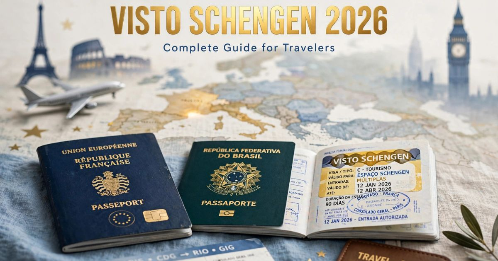

Visto Schengen 2026: guia completo para viajar para a Europa
Introdução: o sonho europeu começa com o visto
Viajar para a Europa é o sonho de milhões de brasileiros. Seja para conhecer as belezas de Paris, a história de Roma, a cultura de Barcelona ou os canais de Amsterdã, o continente europeu oferece experiências inesquecíveis. No entanto, para a maioria dos brasileiros, o primeiro passo para realizar esse sonho é obter o visto Schengen — o documento que permite a entrada em 27 países europeus com um único visto.
Em 2026, o processo de solicitação do visto Schengen continua sendo rigoroso e detalhado, mas com algumas novidades importantes. A digitalização do processo, a exigência de seguro viagem com cobertura mínima de € 30.000 e a necessidade de comprovar vínculos sólidos com o Brasil são alguns dos pontos que todo solicitante precisa conhecer.
Neste guia completo sobre o visto Schengen, você vai encontrar tudo o que precisa saber para solicitar o visto com sucesso: o que é o Espaço Schengen, quem precisa do visto, os tipos de visto disponíveis, a documentação necessária, o passo a passo da solicitação, dicas para a entrevista, os valores atualizados e respostas para as principais dúvidas dos viajantes.
Nosso objetivo é desmistificar o processo e mostrar que, com organização e as informações corretas, obter o visto Schengen é perfeitamente possível. Afinal, a Europa espera por você — e o primeiro passo é ter o visto em mãos.
O que é o Espaço Schengen
O Espaço Schengen é uma área composta por 27 países europeus que aboliram o controle de passaportes em suas fronteiras internas. Isso significa que, uma vez que você entra em um país do Schengen, pode viajar livremente entre os demais países sem passar por novos controles de imigração.
Países do Espaço Schengen em 2026:
- Europa Ocidental: Alemanha, Áustria, Bélgica, França, Holanda, Luxemburgo, Suíça
- Europa Meridional: Espanha, Itália, Portugal, Grécia, Malta
- Europa Setentrional: Dinamarca, Finlândia, Islândia, Noruega, Suécia
- Europa Central e Oriental: Polônia, República Tcheca, Hungria, Eslováquia, Eslovênia, Estônia, Letônia, Lituânia, Croácia
Países europeus que NÃO fazem parte do Schengen:
- Reino Unido (Inglaterra, Escócia, País de Gales, Irlanda do Norte)
- Irlanda
- Romênia (em processo de adesão)
- Bulgária (em processo de adesão)
- Chipre (em processo de adesão)
Para esses países, é necessário um visto específico ou, no caso do Reino Unido, um visto separado. É importante verificar as exigências de cada destino antes de planejar sua viagem.
Quem precisa do visto Schengen
A maioria dos cidadãos brasileiros precisa de visto para entrar no Espaço Schengen. No entanto, existem algumas exceções importantes que você precisa conhecer para não viajar com a documentação errada.
Brasileiros com dupla cidadania europeia: Se você possui cidadania de um país do Espaço Schengen (como Itália, Portugal, Espanha, etc.), não precisa de visto. Você pode viajar com seu passaporte europeu.
Brasileiros com visto de residência em país do Schengen: Se você possui autorização de residência em um país do Espaço Schengen, pode circular livremente pela área.
Brasileiros com visto de longa duração: Se você possui um visto de longa duração (estudante, trabalho) de um país do Schengen, pode viajar para outros países do Espaço Schengen por até 90 dias.
Para todos os outros brasileiros: O visto Schengen é obrigatório para turismo, negócios, visitas a familiares e qualquer outra estadia de curta duração (até 90 dias).
Tipos de visto Schengen
Existem diferentes tipos de visto Schengen, dependendo do propósito da viagem. Conheça os principais:
Visto de Turismo (Tipo C): O mais solicitado por brasileiros. Permite estadia de até 90 dias em um período de 180 dias. É indicado para turismo, férias, visitas a familiares e atividades de lazer.
Visto de Negócios (Tipo C): Similar ao visto de turismo, mas específico para atividades profissionais, como reuniões, feiras, congressos e negociações. A documentação deve incluir carta da empresa convidante e comprovantes de atividade profissional.
Visto de Estudante (Tipo D): Para estadias superiores a 90 dias, como cursos de idiomas, intercâmbio acadêmico ou pós-graduação. Exige comprovação de matrícula em instituição de ensino europeia e capacidade financeira.
Visto de Trabalho (Tipo D): Para estadias superiores a 90 dias com contrato de trabalho em país do Schengen. Exige oferta de trabalho e autorização do governo do país de destino.
Visto de Trânsito (Tipo A): Para viajantes que precisam fazer conexão em aeroportos do Espaço Schengen sem entrar no país. Nem todos os países exigem esse visto.
Para a maioria dos viajantes brasileiros, o visto de turismo (Tipo C) é o mais adequado. Neste guia, vamos focar principalmente nessa categoria.
Documentos necessários para o visto Schengen
A documentação é um dos pilares do processo de solicitação do visto Schengen. Quanto mais organizada e completa for a sua documentação, maiores são as chances de aprovação.
Documentos obrigatórios:
- Passaporte válido — com validade mínima de 3 meses após a data de retorno ao Brasil e com pelo menos 2 páginas em branco.
- Formulário de solicitação preenchido — disponível no site do consulado do país de destino.
- Foto 3x4 ou 5x7 — recente, com fundo branco, seguindo as especificações do consulado.
- Comprovante de pagamento da taxa de solicitação — valor atualizado anualmente.
- Seguro viagem — com cobertura mínima de € 30.000 para despesas médicas, hospitalares e repatriamento.
- Comprovante de reserva de passagens aéreas — ida e volta, com datas definidas.
- Comprovante de hospedagem — reserva de hotel, carta de convite de residente ou comprovante de aluguel de temporada.
Documentos complementares:
- Comprovantes de vínculo com o Brasil — carteira de trabalho, contracheques, declaração de imposto de renda, escritura de imóvel.
- Comprovantes financeiros — extratos bancários dos últimos 3 a 6 meses, comprovando capacidade de custear a viagem.
- Roteiro de viagem — detalhando as cidades que serão visitadas e o tempo de permanência em cada uma.
- Carta da empresa — autorizando a viagem e informando o cargo e a data de retorno ao trabalho.
- Documentos de propriedade — veículos, imóveis, investimentos.

Documentos necessários para solicitar o visto Schengen em 2026
Passo a passo da solicitação do visto Schengen
O processo de solicitação do visto Schengen varia conforme o consulado, mas segue um padrão geral. Confira o passo a passo completo:
- Identifique o país principal — O visto deve ser solicitado no consulado do país onde você passará mais dias ou, em caso de empate, do país de entrada na Europa.
- Agende a entrevista — Acesse o site do consulado do país escolhido e agende a entrevista. Em períodos de alta demanda (primavera/verão), o agendamento pode levar semanas.
- Reúna a documentação — Organize todos os documentos listados anteriormente, em ordem e com cópias.
- Compareça à entrevista — No dia agendado, compareça ao consulado com toda a documentação. A entrevista dura cerca de 10 a 15 minutos.
- Aguarde a análise — O prazo para análise do visto varia de 15 a 45 dias. Em períodos de alta demanda, pode ser mais longo.
- Retire o visto — Se aprovado, o visto será carimbado no passaporte. A retirada é feita no consulado ou pelos Correios.
Entrevista no consulado: como se preparar
A entrevista é o momento decisivo do processo. O oficial consular avaliará sua documentação e fará perguntas sobre sua viagem. A preparação adequada é fundamental.
Perguntas típicas da entrevista:
- "Qual é o propósito da sua viagem?" — Seja claro: turismo, negócios, visita a familiares, etc.
- "Por que você escolheu este país?" — Mencione atrações, cultura, história ou qualquer motivo relevante.
- "Quanto tempo você pretende ficar?" — Informe as datas exatas e a duração da estadia.
- "O que você faz profissionalmente?" — Explique sua profissão, empresa e cargo.
- "Quem vai custear a viagem?" — Informe se é você ou um familiar.
Dicas para a entrevista:
- Seja honesto — Mentir no processo pode levar à negativa e à proibição futura.
- Seja objetivo — Responda de forma clara e direta. Evite informações desnecessárias.
- Mantenha a calma — A ansiedade é normal, mas a confiança é importante.
- Vista-se adequadamente — Use roupas sociais ou casuais-elegantes.
- Chegue com antecedência — Recomenda-se chegar 30 minutos antes do horário agendado.
Valores e taxas do visto Schengen em 2026
Os valores para solicitação do visto Schengen são atualizados anualmente pela União Europeia. Confira os valores para 2026:
| Serviço | Valor (€) | Valor aproximado (R$)* |
|---|---|---|
| Taxa de solicitação (adulto) | € 80,00 | ~ R$ 440,00 |
| Taxa de solicitação (criança 6-12 anos) | € 40,00 | ~ R$ 220,00 |
| Taxa de solicitação (criança menor 6 anos) | Gratuita | — |
| Taxa de agendamento (terceirizada) | € 20-30 | ~ R$ 110-165 |
| Seguro viagem (mínimo 7 dias) | € 15-30 | ~ R$ 82-165 |
*Valores aproximados com base no câmbio de julho de 2026 (€ 1,00 ≈ R$ 5,50).
Total estimado: Aproximadamente R$ 700 a R$ 900 (incluindo taxa, agendamento e seguro viagem).
Prazos e validade do visto Schengen
Os prazos para obtenção do visto Schengen variam conforme o consulado e a época do ano.
Prazos médios em 2026:
- Agendamento — de 1 a 8 semanas (dependendo da demanda do consulado).
- Análise do visto — de 15 a 45 dias úteis.
- Validade do visto — até 90 dias de estadia em um período de 180 dias.
Validade do visto Schengen: O visto de curta duração (Tipo C) permite estadia de até 90 dias em um período de 180 dias. A validade é contada a partir da data de entrada no Espaço Schengen.
Atenção: A validade do visto é diferente do tempo de estadia permitido. Mesmo que seu visto tenha validade de 1 ano, o tempo que você pode ficar na Europa é definido pela regra dos 90/180 dias.
Dicas para aumentar suas chances de aprovação
- Comprove vínculos fortes com o Brasil — Emprego estável, família, imóveis e negócios são os principais argumentos para demonstrar que você pretende retornar.
- Não minta em nenhuma informação — Inconsistências são facilmente detectadas e levam à negativa.
- Tenha um roteiro de viagem planejado — Mostre que você tem um planejamento claro e realista.
- Não compre passagens aéreas antes do visto — Espere a aprovação para evitar prejuízos financeiros.
- Contrate um seguro viagem válido — A cobertura mínima exigida é de € 30.000.
- Organize sua documentação — Leve uma pasta com todos os documentos em ordem.
- Aplique com antecedência — Inicie o processo com pelo menos 3 meses de antecedência da viagem.
O visto Schengen é um dos processos mais detalhados para viajantes brasileiros, mas com organização e as informações corretas, é perfeitamente possível obter a aprovação. Lembre-se: a honestidade e a clareza na apresentação dos documentos são os fatores mais importantes. E não se esqueça do seguro viagem — ele é obrigatório e deve ter cobertura mínima de € 30.000!
❓ Perguntas Frequentes sobre o visto Schengen
Não. O visto Schengen não é um direito automático. Cada solicitação é analisada individualmente, e a aprovação depende da capacidade do solicitante em comprovar vínculos com o Brasil, situação financeira e propósito da viagem.
Em média, o processo completo pode levar de 15 a 45 dias úteis após a entrevista. Recomenda-se iniciar o processo com pelo menos 3 meses de antecedência da viagem.
Não. O visto deve ser solicitado no consulado do país onde você passará mais dias ou, em caso de empate, do país de entrada no Espaço Schengen.
Se seu visto for negado, você pode tentar novamente a qualquer momento. Identifique o motivo da negativa e corrija as questões apontadas. Em alguns casos, é possível recorrer da decisão.
Não é recomendado comprar passagens aéreas antes da aprovação do visto. O ideal é ter uma reserva (que pode ser cancelada) e comprar apenas após a aprovação.
Não. O visto de curta duração (Tipo C) não permite trabalho remunerado. Para trabalhar na Europa, é necessário um visto específico (Tipo D) para estadia superior a 90 dias.
Sim. Todos os viajantes, independentemente da idade, precisam de visto para entrar no Espaço Schengen. Crianças e bebês devem ter seus próprios passaportes e vistos.
O custo total para o visto Schengen em 2026 é de aproximadamente R$ 700 a R$ 900, incluindo a taxa de solicitação (€ 80), taxa de agendamento e seguro viagem. Os valores podem variar conforme o câmbio.